Hi! I'm Lino Silva.
A software engineer, LEGO lover, beer drinker, avid gamer kind of guy.
Where have I been, you ask?
1986
Born in Rio de Janeiro, Brazil
2001

Moved to Braga, Portugal
2002
Played semi-pro tennis for about a year
2004
Enrolled as a Software Engineering student at Minho University
2004
Learned about the wonders of beer
2010
Started life as a working man
Present day
Being awesome
What have I been doing?
Intern - Plako
- Turning a PSD design into a fully-functional website, making use of home grown Portal and CMS.
- Maintain and develop core modules of said applications, as well as live websites
Main Technologies:
Javascript
HTML
CSS
PHP
XUL
Nov 2010 - July 2011
Junior Web Developer - Farfetch
- Part of the Partners/Portal Team, responsible for creating/maintaining new and existing partner websites, as well as farfetch.com
Main Projects
- Multi-faceted asynchronous catalog browser
- Infinite scroll editorial page
- Full-screen image zoom plugin
Main Technologies:
Sep 2011 - Sep 2012
Web Developer - Farfetch
- Part of the Portal team, responsible for maintaining and driving the product’s new features. Working alongside UI, Design and UX teams using SCRUM methodologies.
Main Projects
- Qubit OpenTag integration
- Clickstream (streaming server and collector pixel)
- Parallax homepage
- Recommendation engine integration
Main Technologies:
Sep 2012 - Sep 2013
Senior Web Developer - Farfetch
- Part of the Partners/Portal Team, responsible for creating/maintaining new and existing partner websites, as well as farfetch.com
Main Projects
- Multi-faceted asynchronous catalog browser
- Infinite scroll editorial page
- Full-screen image zoom image plugin
Main Technologies:
Sep 2013 - Feb 2014
Senior Web Developer - Farfetch
- First engineer part of the newly-created Labs (R&D) team, responsible for practicing and promoting innovation across the organisation.
Main Projects
- Centralised logging with ELK stack
- iOS iBeacons Prototype
- 3D Visualisation
- Natural data interfaces
- A/B testing framework
- Sentiment analysis service
- iOS Automated user testing
- URL shortner service
- Internal Hackathon organisation
Main Technologies:
Javascript
HTML
CSS
iOS
Python
WebGL
Sep 2011 - Sep 2012
 Started life as a working man
Started life as a working man
 Being awesome
Being awesome